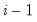

|
|
|
is the number of endogenous variables in the VAR. The first column contains the eigenvalues, the second column contains the maximum eigenvalue statistics, the third column contains the trace statistics, and the fourth column contains the log likelihood values. The i-th row of columns 2 and 3 are the test statistics for rank . The last row is filled with NAs, except the last column which contains the log likelihood value of the unrestricted (full rank) model.
 is the number of coefficients in the cointegrating equation. Applicable when “lag=a”.
is the number of coefficients in the cointegrating equation. Applicable when “lag=a”. is the length of the cross-section.
is the length of the cross-section.